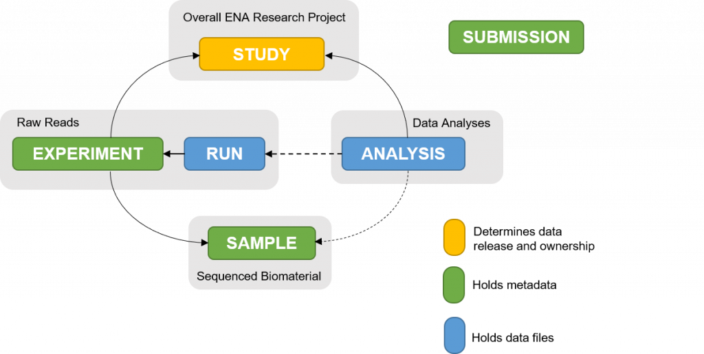

Exploring Public Sequencing Data
Public data can be extremely helpful in a number of different applications. Whether testing new tools, writing applications, comparisons of data, it has become an essential source of data. Whenever publishing a scientific article, many papers will require the raw data to be made available online. Public data can be found in a selection of different places, with two central locations that most people will use to store raw sequence data, the European Nucleotide Archive (ENA) and the National Center for Biotechnology Information (NCBI). The data can contain reads for whole genome sequencing, gene expression or any other application sequencing can be used for, as well as data coming from different sequencers. We will take a look at the two main databases, how to search, download and finally quality check the data.
NCBI
Previously, we looked NCBI reference genomes. Besides genomes, it also contains many different sets of tools and data that can come in handy in a multitude of situations, for now we will look at experiments and associated raw sequencing data in Gene Expression Omnibus(GEO) and Sequence Read Archive (SRA). GEO contains functional genomics experiments, which includes metadata and experimental results. SRA is the sequence archive that contains the raw reads. GEO can help us search for studies and look at their results while SRA can help us search for specific data types.
GEO
GEO is a public repository for functional genomics data. It contains data from experiments such as gene expression profiling, RNA-seq, microarrays, epigenomics, and other high-throughput assays. To search in the GEO database, click “Search for Studies at GEO DataSets”. Now we can search the database for things that are of interest for us.
Challenge:
Search for the famous cell line HeLa. How many results do you get? How many of these results were published in the last year? How many have a sample count between 100 and 200?
Solution
Solution.
Solution:
To search, just type ‘HeLa’ in the search bar. Once the results are available, you can filter the results by publication date. There is also a filter for Sample count. If you do not see this option, click Show additional filters. Set the sample count to between 100 and 200.
Click any of the results to get more information, results can include a summary of experiment done, platforms used and links to data. GEO focuses on the biological experiment, associated samples and the resulting measurements.
Often when looking for public data, the starting point will be a publication of interest. We have an example of a paper that might be of interest
Challenge:
Open the paper. Take a look at the data availability. Can you find this dataset in GEO?
Solution
Solution.
Solution:
Generally towards the end of the paper there will be a section with Data Availability. In this case there are three different datasets for this paper within GEO. Either click the links or copy the ID and search for it in GEO to find the data.
GEO mainly focuses on the biological experiment, associated metadata and resulting measurements. When the underlying experiment involves sequencing, GEO records often provide links to the corresponding raw sequencing data. These raw sequencing reads are typically stored in the SRA.
SRA
SRA is a repository for raw sequencing reads generated from a wide range of experimental approaches. These include RNA sequencing and other expression-related experiments, whole-genome and targeted sequencing, DNA methylation assays, Hi-C experiments, and many other high-throughput sequencing applications.
The data are organised into four main levels:
Studyprovides overarching information about the research project or investigation and groups related samples and experiments.Sampledescribes the biological material from which the data were generated.Experimentdescribes how the sample was prepared and sequenced, including details such as the library, sequencing technology, and experimental design.Runrepresents an individual sequencing run and contains the raw sequencing reads generated during that run.
These levels are linked rather than strictly hierarchical. A single study can contain multiple samples, each sample can be associated with one or more experiments, and an experiment can have one or more sequencing runs.
Challenge:
Same as for GEO, search for ‘HeLa’ in the search bar. How many results do you find? How do these results differ from GEO?
Solution
Solution.
Solution:
SRA is different from GEO in the way that now we are looking at single run results, instead of an overview of a complete experiment.
The data can be filtered on things like source or sequencing platform, this can help finding specific sample types. Once a dataset of interest has been found, the next step is to download it. In SRA, this is a two step approach. The main thing we need to download is a runID.
Looking at the GEO results, at the bottom of the page there is a link to SRA Run Selector. This will lead to an overivew page, that contains a list of runID which can all be downloaded. As an example dataset, we will use a dataset which has a number of different HeLa cells sequenced separately. The data can be found here. Lets download the first record.
$ prefetch SRR15372746Prefetch grabs all the information for a run. To download the fastq files related to the run, the following command can be used.
$ fasterq-dump SRR15372746/SRR15372746.sraThis will download the data for a single run. To download all the samples in dataset, the accession list can be downloaded from the SRA run page. An accession list will contain all the run IDs which are within a study. To then download the full set, this file can be used.
Note: You do not have to run these commands now
$ prefetch --option-file ACCESSIONLIST.txtThe SRA file will be downloaded for each one of the runs. To then download all the fastq files, a for loop can be used.
$ for i in */*.sra
do
fasterq-dump $i
doneAgain, this will take a while, however at the end of the command, all the data for the study should be downloaded.
ENA
ENA similar to SRA contains raw data. ENA covers more than just raw sequencing reads, it also contains assembly information and functional annotations.
Data within the archive is very similarly organised as SRA into several interconnected object types. Study represents the overall research project and contains information such as the study description, data ownership and release information. A Sample represents a biological sample included in a study. It can contain information such as the organism, sample type, collection location and other sample-specific metadata. An Experiment describes how a sample was prepared and sequenced. It links the Sample to the Study and contains information about the sequencing experiment, such as the library and sequencing platform. A Run represents an individual sequencing run and contains the raw sequencing reads generated by that run. Finally, an Analysis represents processed data derived from sequencing data, such as genome assemblies or sequence annotations. Below an overview of how the data is structured.

Search
The search can be limiting, however we can do text searches. Search for the term HeLa. Initially it might say no results were found, however results should start showing up shortly after. At the top of the screen, a bar will indicate if all results are given or if the search is still ongoing. Once the results are in, they are structured into different groups. To look at the full results for each group, click on link on the left.
Challenge:
Take a look at all projects related to HeLa. How many projects are related to this term?
Solution
Solution.
Solution:
Click on Project on the left side of the screen. In total there are 2,515 projects related to HeLa.
Filtering the results within ENA is much more tricky than GEO or SRA. In general it is easier to search for data using IDs from publications. For many studies, data that is in NCBI will also be ENA. The link to ENA is often given in the form of a BioprojectID. Lets take a look at the study we looked at in SRA, but now in ENA.
Challenge:
Take a look at the SRA results and find the BioProject. Search for PRJNA752995 in ENA. How many samples are available for this study in ENA?
Solution
Solution.
Solution:
Put the ID within the text search or in the accession search at the top of the page. In total there are 15 samples within this project.
The download for ENA is very straightforward. At the top of the FASTQ column there is a Download All button. If we press this button, a small script will be generated that we can run to download all the data. The script can be copied to server and run.
$ bash SCRIPT.shWhen downloading a study, you will only need to use one of the methods to download the data. Use the method whichever has your preference. Once the data is download, it is time for QC.